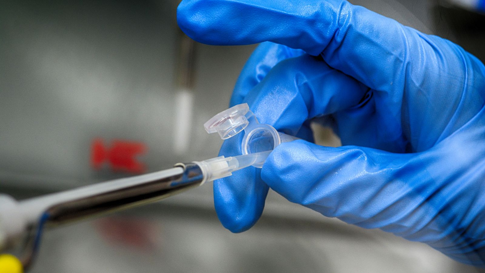

Regulated continuum
Building resilient pharmaceutical access
A governed operating model connects market-entry planning, quality readiness and qualified supply relationships.
Explore the systemNovaPharm governed design system
Reusable semantic components, property-specific art direction and evidence-led interaction patterns for the public estate and secure portal.
Creative-direction evidence
Each direction demonstrates Corporate, NIT, Founder, Portal and compact mobile expression. Direction A is the selected foundation; B and C supply limited supporting patterns.
Direction A
Controlled continuity: editorial photography and a continuous evidence line connect strategy, quality and movement.
Regulated continuum
A governed operating model connects market-entry planning, quality readiness and qualified supply relationships.
Explore the systemRegulated continuum
Architecture, evidence and human oversight shape every technology decision.
Explore the systemRegulated continuum
Writing and governance notes from Vishal Chakravarty, Chief Executive Officer.
Explore the systemRegulated continuum
Controlled access to approvals, documents, risks and decisions.
Explore the systemMobile system
Decisions remain clear, calm and evidence-led on a compact screen.
Direction B
Geographic intelligence: market layers and calibrated cartographic structure make international context legible.
Institutional atlas
A governed operating model connects market-entry planning, quality readiness and qualified supply relationships.
Explore the systemInstitutional atlas
Architecture, evidence and human oversight shape every technology decision.
Explore the systemInstitutional atlas
Writing and governance notes from Vishal Chakravarty, Chief Executive Officer.
Explore the systemInstitutional atlas
Controlled access to approvals, documents, risks and decisions.
Explore the systemMobile system
Decisions remain clear, calm and evidence-led on a compact screen.
Direction C
Documented confidence: decisions, identifiers and review states are foregrounded as a regulated operating record.
Clinical ledger
A governed operating model connects market-entry planning, quality readiness and qualified supply relationships.
Explore the systemClinical ledger
Architecture, evidence and human oversight shape every technology decision.
Explore the systemClinical ledger
Writing and governance notes from Vishal Chakravarty, Chief Executive Officer.
Explore the systemClinical ledger
Controlled access to approvals, documents, risks and decisions.
Explore the systemMobile system
Decisions remain clear, calm and evidence-led on a compact screen.
Governed component workbench
Examples below exercise public editorial composition and dense operational states without presenting synthetic records as live data.
Evidence architecture
Visible language and structured data resolve to the same governed record.

Current corporate activity, contracted infrastructure and authorisation-dependent wholesale scope remain explicitly separated.
Chief Executive Officer
Founder and statutory director are maintained as separate governance facts.
1 results
Business-to-business assessment; availability is not implied.
| Control | Owner | Review state |
|---|---|---|
| WDA(H) readiness | Quality | Evidence review |
| Supplier qualification | Operations | Controlled |
Three of five controls reviewed and two pending. This is component sample data, not operational reporting.
| State | Controls |
|---|---|
| Reviewed | 3 |
| Pending | 2 |
Verify holder, scope and effective dates.
Required
Quality and legal owners approve publishable wording.
Publish only after the applicable authorisation gate.
Two illustrative records require review.
Retrieving authorised data.
Approved files will appear here.
The request could not be completed. No data was changed.
Synthetic workbench data
Quality reviewer requested supporting evidence
Content owner placed publication on hold
No public claim was released.
Controlled document
Synthetic workbench document
The viewer keeps document context, permission-aware actions and audit information together. No confidential file is embedded in this public workbench.